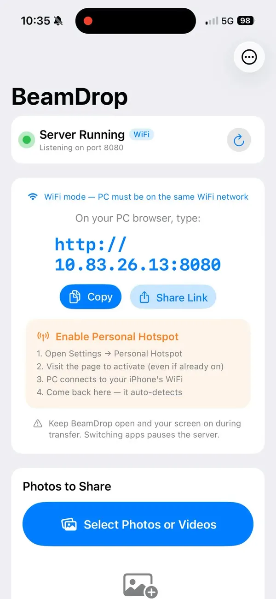

Fotos & Videos vom iPhone auf jeden Computer übertragen — sofort.
BeamDrop macht Ihr iPhone oder iPad zu einem kleinen lokalen Webserver. Wählen Sie Ihre Fotos und Videos, öffnen Sie die angezeigte Adresse in einem beliebigen Browser auf PC oder Mac und laden Sie sie in voller Auflösung herunter — über lokales WLAN oder Persönlichen Hotspot. Kein USB-Kabel, kein Cloud-Upload, keine Anmeldung.
90-Sekunden-Durchlauf ansehen
Vom Gewähren des Zugriffs auf dem iPhone bis zum Herunterladen auf einem Windows-PC — der komplette Ablauf von Anfang bis Ende.
So funktioniert es
Zwei Seiten, ein paar Fingertipps. Das iPhone teilt; der Computer lädt herunter.
Auf Ihrem iPhone



http://172.20.10.1:8080.Auf Ihrem Computer


Warum Menschen BeamDrop nutzen
Ein fokussiertes Werkzeug, das eine Sache gut kann — Ihre Medien schnell und privat vom Handy zu holen.
🔌 Ohne Kabel
Vergessen Sie USB-Kabel, Adapter und iTunes. Alles läuft über Ihr lokales WLAN oder den Persönlichen Hotspot.
☁️ Ohne Cloud
Dateien gehen direkt vom iPhone an Ihren Computer. Nichts wird jemals auf einen Drittanbieter-Server hochgeladen.
🔒 Ohne Konto
Keine Registrierung, kein Login, kein Tracking. App öffnen und in Sekunden teilen.
🖼️ Volle Auflösung
Fotos und Videos werden als Originaldateien übertragen — keine Neukomprimierung, kein Qualitätsverlust.
⚡ Blitzschnell
Lokale Netzwerkgeschwindigkeit bedeutet: große Videos und ganze Stapel laden in Momenten statt Minuten herunter.
💻 Überall einsetzbar
Jedes Gerät mit einem Browser kann Dateien empfangen — Windows, Mac, Linux, Tablets, sogar ein anderes Handy.
👁️ Erst Vorschau
Sehen Sie Vorschaubilder im Browser, wählen Sie genau aus, was Sie wollen, oder laden Sie mit Download All den ganzen Satz.
🛫 Reisegeeignet
Der Persönliche-Hotspot-Modus ermöglicht Übertragung überall — kein gemeinsam genutztes WLAN nötig.
Privat von Grund auf
BeamDrop erhebt nie Ihre Daten und sendet nie Fotos oder Videos in die Cloud. Die App betreibt einen leichten Webserver direkt auf Ihrem iPhone, und Dateien werden nur über Ihr eigenes lokales Netzwerk an den von Ihnen gewählten Computer übertragen. Es gibt keine Konten, keine Analyse-Tools und keine Werbung. Wenn Sie die App schließen, stoppt der Server. Details finden Sie in unserer Datenschutzrichtlinie.
FAQ
Brauche ich ein Kabel, um Fotos vom iPhone auf den PC zu übertragen?
Nein. BeamDrop überträgt über ein lokales WLAN oder den Persönlichen Hotspot Ihres iPhones. Kein USB-Kabel, kein iTunes und kein Cloud-Upload nötig.
Lädt BeamDrop meine Fotos in die Cloud hoch?
Nein. Dateien wandern direkt vom iPhone zum Computer über das lokale Netzwerk. Nichts wird auf einen Server hochgeladen und kein Konto ist erforderlich.
Welche Computer und Browser werden unterstützt?
Jedes Gerät mit einem modernen Webbrowser — Windows, macOS, Linux oder ein anderes Handy oder Tablet. Öffnen Sie einfach die Adresse, die BeamDrop anzeigt.
Welche Adresse gebe ich auf dem Computer ein?
BeamDrop zeigt eine lokale URL in der App an, z. B. http://172.20.10.1:8080. Geben Sie genau diese Adresse in Ihren Browser ein. Tippen Sie in der App auf „Aktualisieren“, falls sie noch nicht angezeigt wird.
Werden Fotos und Videos in voller Auflösung übertragen?
Ja. BeamDrop sendet die Originaldateien in voller Qualität, ohne Neukomprimierung.
Warum funktioniert die Verbindung nicht?
Stellen Sie sicher, dass iPhone und Computer im selben WLAN sind oder Ihr Computer mit dem Persönlichen Hotspot Ihres iPhones verbunden ist. Lassen Sie BeamDrop während der Übertragung geöffnet und das iPhone wach.
Welche iOS-Version wird benötigt?
iOS 17.0 oder höher, auf iPhone und iPad.
Wie erreiche ich den Support?
Schreiben Sie an wangning.engineer@outlook.com. Übliche Antwortzeit: 24–48 Stunden.
App holen
BeamDrop ist im App Store für iPhone und iPad erhältlich.